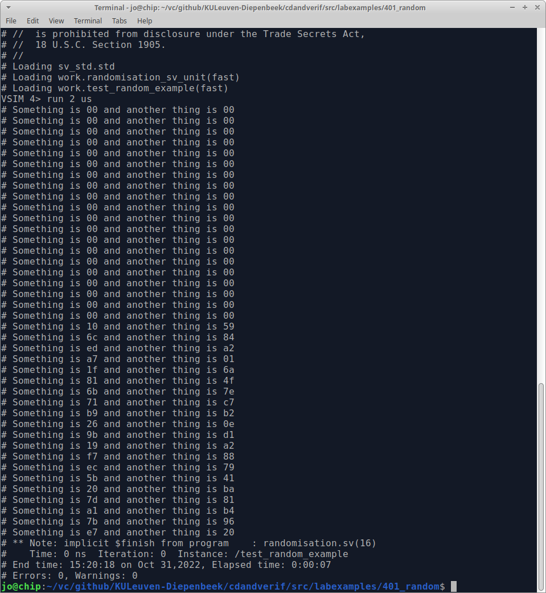

From the classical approach of testbenches, you already know that you best test your design with different values.
In the previous part, we validated that 0 + 5 equals 5. Although repeating a test with same value could learn something, after a few correct iterations, however, it can be determined that the design knows how to handle that instruction.
In this part the instruction needs to be randomised. When working within a class declaration, making a data member randomisable is very straightforward by using the keywords rand or randc.
Using the rand keyword, labels a member to be randomisable.
class demo
rand bit[1:0] data
…
E.g. the outcome could be: 2’b01, 2’b11, 2’b00, 2’b01, 2’b10, …
Similarly, using the randc keyword also labels a member to be randomisable. The additional requirement in randc is that it loops through all possible numbers prior to starting over.
class demo
randc bit[3:0] data
…
E.g. the outcome could be: 2’b10, 2’b11, 2’b01, 2’b00, 2’b01, …
The modifications to the code are, as you can see below, minimal. The rand (or randc) keyword can only be applied in a class declaration.
`ifndef SV_TRA_TRANSACTION
`define SV_TRA_TRANSACTION
class transaction;
byte instruction;
...
`ifndef SV_TRA_TRANSACTION
`define SV_TRA_TRANSACTION
class transaction;
rand byte instruction;
...
Above, the SystemVerilog approach to marking a member as randomisable is explained. This doesn’t assign a random value to the class members, mind you. Once an object is created, SystemVerilog allows to call the randomize() method that assigns random values to the class members that are marked with rand or randc.
Although you don’t have to write/program this method, every class has a built-in randomize() virtual method. The signature of this method is:
virtual function int randomize();
The virtual function returns an int: 1 for success, and 0 otherwise. The code below illustrates how to get a randomised transaction. Convince yourself that this is not complicated, but may be a bit cumbersome to write. A shorter way of randomising is ignoring the return value of the function. To achieve this, the return value is typecast to void.
...
/* create an object */
transaction myTrans;
/* call the virtual method randomise */
if(myTrans.randomize()) $display ("myTrans has been randomised")
else $display ("myTrans has NOT been randomised")
/* a shorter way */
void'(myTrans.randomize());
...
SystemVerilog objects have a function rand_mode() that can enable or disable the effect of randomisation. With some scenarios it can be useful to be able to turn off randomisation. When randomisation is disabled, these class properties act as normal variables. Initially, all class properties that have the rand or randc keywords have randomisation enabled. The rand_mode() method is a built-in task that cannot be overwritten. For the sake of completeness it is mentioned that the rand_mode() function can also be used to check whether the randomisation is enabled or not, by simply evaluating the return value.
With the example of the transactions, this can be achieved as follows:
transaction myTrans;
/* disable ALL random class properties */
myTrans.rand_mode(0);
/* enable ALL random class properties */
myTrans.rand_mode(1);
/* disable only the random class properties: operation */
myTrans.operation.rand_mode(0);
/* check the mode*/
if myTrans.operation.rand_mode()
$display("Randomisation of 'operation' is enabled");
else
$display("Randomisation of 'operation' is disabled");
As you may notice, during some tests, SystemVerilog always generates the “same” sequence of random numbers. Therefore, you might think “Well, that’s not random then.”
However, this is a very nice feature. When you write more complex test scenarios it might happen that at a certain point in time an error pops up. If the random generation were truly random, you had no means of rerunning the same tests with the same numbers. 😃
If you want to test with different series of random numbers, you can re-seed the random number generator. This can be achieved by setting the seed in the constructor of an object with srandom (seed); where seed is a different number.
Running with a seed x generates one certain stream of random numbers for that object, while running with seed y provides you with another. If your test reports show that there was an issue in the x series, you can go and investigate this later.
As mentioned before, SystemVerilog uses a lot of different files. Sometimes, certainly when learning the language, it can be useful to test a smaller portion on its own.
Take, for example, the transaction class. In SystemVerilog it is perfectly OK to add program in the same file.
A program can be used similarly to a module. While the latter is used for RTL code, a program is used for verification. The difference lies with how the scheduler of the simulator handles the program or module. This, however, falls out of scope for this introductory course.
class random_example;
rand byte something;
rand byte another_thing;
function new();
this.something = 0;
this.another_thing = 0;
endfunction : new
function string toString();
return $sformatf("Something is %02x and another thing is %02x", this.something, this.another_thing);
endfunction : toString
task printString();
$display(this.toString());
endtask : printString
endclass : random_example
program test_random_example();
random_example re;
initial
begin
re = new();
for(int i=0;i<20;i++)
re.printString();
for(int i=0;i<20;i++)
begin
void'(re.randomize());
re.printString();
end
end
endprogram : test_random_example
To run this test on the transaction, QuestaSim can be used … even without a GUI.
